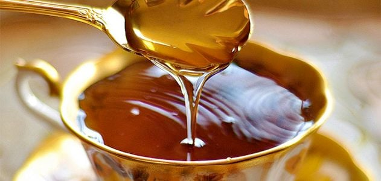
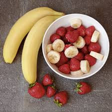
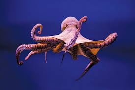
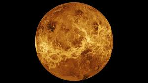
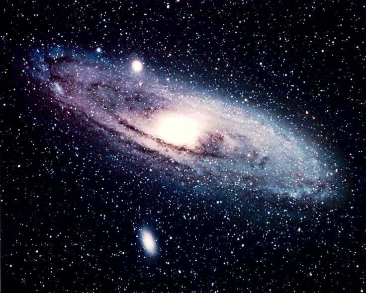
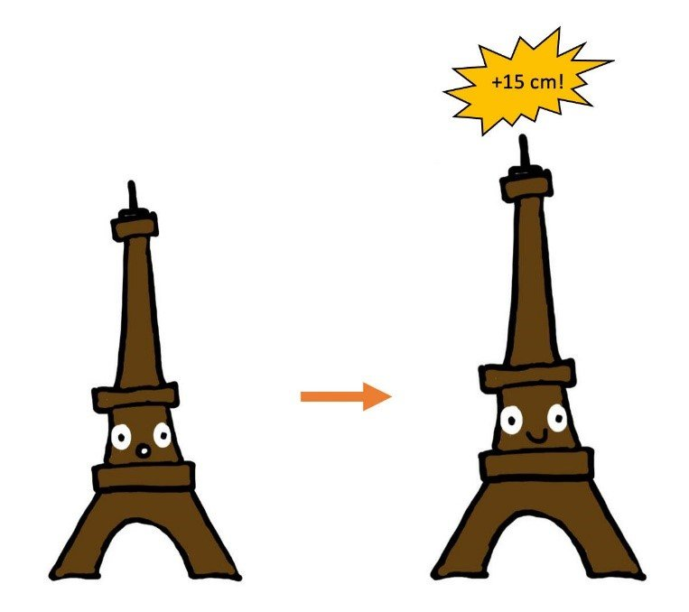

Fun Facts
Fact 1
Did you know that honey never spoils? Archaeologists have found pots of honey in ancient Egyptian tombs that are over 3,000 years old and still perfectly edible.
Fact 2
Bananas are berries, but strawberries aren’t. Botanically, bananas are classified as berries, while strawberries are not.
Fact 3
Octopuses have three hearts. Two pump blood to the gills, while the third pumps it to the rest of the body.
Fact 4
A day on Venus is longer than a year on Venus. It takes Venus about 243 Earth days to rotate once, but only about 225 Earth days to orbit the Sun.
Fact 5
There are more stars in the universe than grains of sand on all the Earth's beaches. Scientists estimate there are about 1,000,000,000,000,000,000,000 stars in the observable universe.
Fact 6
The Eiffel Tower can be 15 cm taller during the summer. When a substance is heated up, its particles move more and it takes up a larger volume - this is known as thermal expansion.
